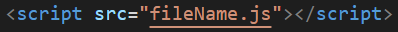

sims jonny p6 js-3
Internal vs External Scripting
- INTERNAL JS statements are written INSIDE the document (index.html) with 'script' elements.
- EXTERNAL scripting uses a JS src attribute to call a file like this: 
- All the JS Statements are then written in the assigned JS src file.
- Our assigned JS src file is main.js NOT fileName.js
- Our JS src file needs to be in our (root) project folder to work with way.
- We'll place our element at the bottom of the head.
- External Scripting is safer, faster, and separates HTML and JS for organization.
- 'script' elements are for HTML only NOT JS src files.
- In line 6 - What is happening?
- it's titleing the document
- line 7 - What is happening?
- it's linking the style sheet
- In line 8 - What is happening?
- it's linking the java sciprt
- how the DIV box is grey when their technically is no DIV box rule in the CSS stylesheet.
- the div is grey by default
- In line 21 - what is the src attribute doing and why is it needed?
- it's linking a picture and the picture wouldn't load without the src
- What is the PARENT of the ul element in line 22-29?
- element(s) are the CHILDREN of the ul element in line 22-29?
- What does the symbol on line 33 do?
- it makes a comment in the code without having anything pop up in the website
- What does the symbol on line 80 do?
- Why do lines 33-80 not show up on the output?
- because it's a comment and it doesn't effect the code
- How is everything centered in the body, but not in the DIV (I am aware that the DIV itself is centered, I am addressing its content).
- everythin in the body is alligned center but the text isn't in the body it's in the div so the body rules don't apply
- Why is EXTERNAL scripting better than INTERNAL scripting?
- it's better for organization
- In your stylesheet, what is the rule "margin: auto;" doing to #Notes?
- it's alligning the element to the center
- In your stylesheet, what is the rule "width: fit-content;" doing to #Notes?
- it sets the width of the element to the minimum width of it's content
- In the stylesheet, what are all the text strings "'* '" doing?
- it's changin the dot on the unordered list